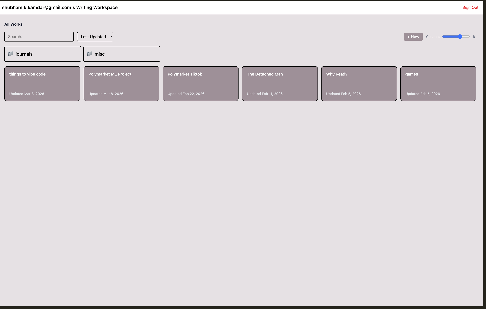
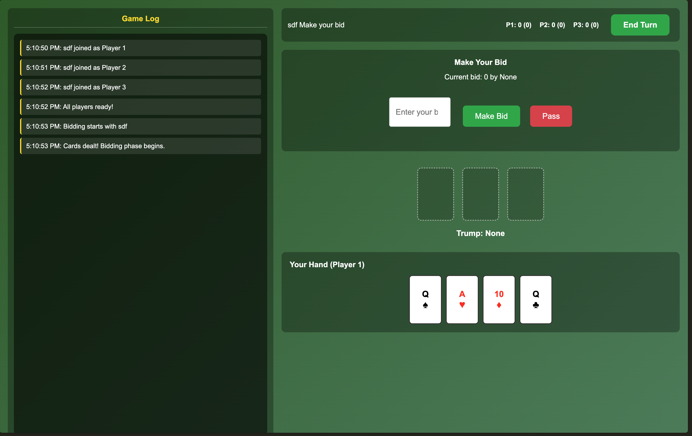
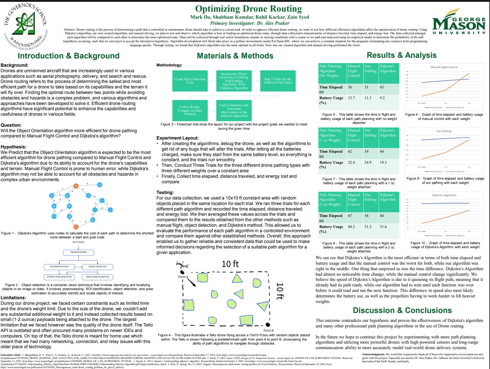
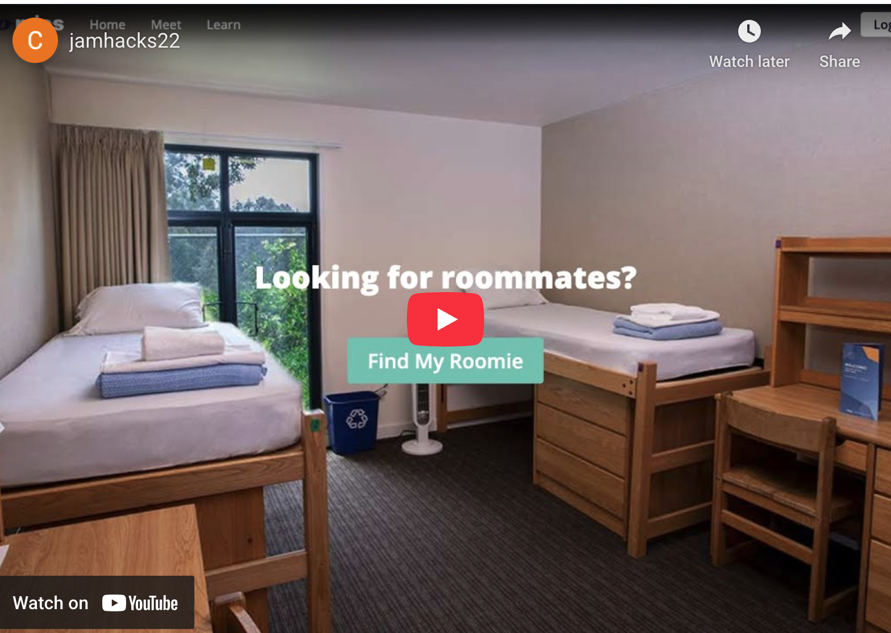

Projects
What I've been up to lately.

Journal Service
A personal journal service with custom-built features. Built my own platform to log thoughts, track habits, and reflect — tailored exactly to how I think.

304 Card Game
Built several multiplayer card games to play with friends online — including 304, poker-based games, and Trader Titan. Real-time multiplayer with custom game logic.

VoltWatch
My team's submission to Hoohacks 2024. Used ML and Full-Stack development to analyze solar panel usage to help users optimize their energy costs.

Intelligent Drone Routing
Research project integrating CV and ML into pathfinding algorithms like Dijkstra's and A*. Trained a neural network for object classification with dynamic route optimization from real-time drone camera feed.

Roomies
Full-stack roommate matching app using Flask and Firebase. Features preference-based profiles, mutual matching, and contact sharing. Acquired 200+ users through targeted outreach.